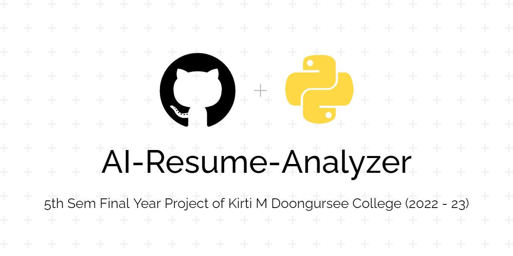

About
A tool which parses information from a resume using natural language processing and finds the keywords, cluster them onto sectors based on their keywords.
And lastly show recommendations, predictions, analytics to the applicant / recruiter based on keyword matching.
Features
| Client | Fetching Location and Miscellaneous Data |
|---|---|
Using Parsing Techniques to fetch: - Basic Info, Skills and Keywords |
|
Using logical programs, it will recommend: - Skills that can be added, Predicted job role, Course and certificates, Resume tips and ideas, Overall Score, Interview & Resume tip videos |
|
Admin |
Get all applicant's data into tabular format |
Download user's data into csv file |
|
View all saved uploaded pdf in Uploaded Resume folder |
|
Get user feedback and ratings |
|
Pie Charts for: - Ratings, Predicted field Experience level, Resume score User count, City State, Country |
|
Feedback |
Form filling |
Rating from 1 - 5 |
|
Show overall ratings pie chart |
|
Past user comments history |
Links
Sweet and Small Tool which can be widely used by any Colleges / Organizations to analyze and get insights of a resume